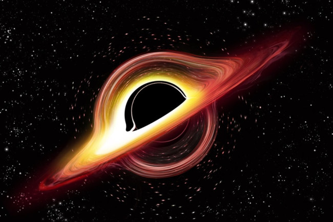
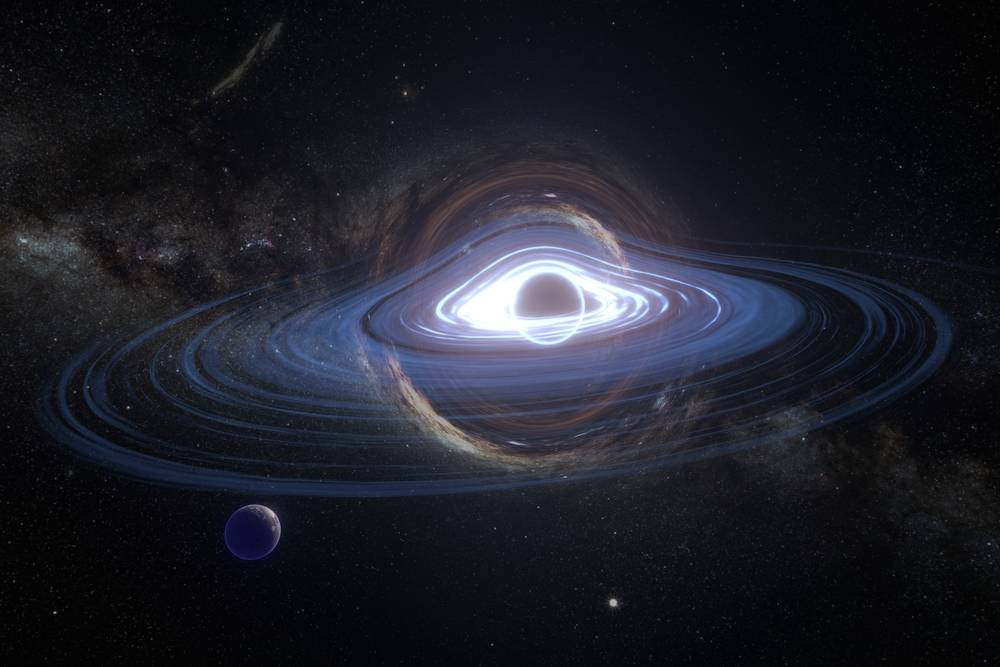
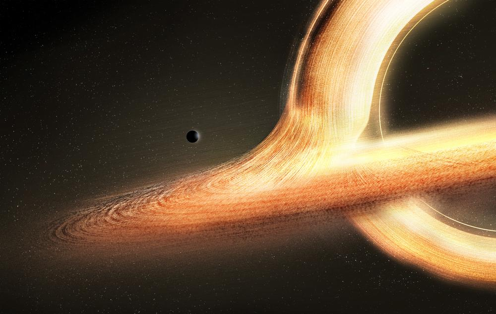

첫 발견
라이고 헌퍼드 관측소에서 처음으로 블랙홀의 존재를 발견,
하지만 눈으로 보진 못했다.
The Black Hole

BLACKHOLE





라이고 헌퍼드 관측소에서 처음으로 블랙홀의 존재를 발견,
하지만 눈으로 보진 못했다.
1970년, 폴 머딘이 왕립천문대에서 에너지의 근원을 찾기 시작,
그 중 가장 큰 에너지를 지닌 백조자리에 초점을 맞췄다.
쌍성 중에서도 하나의 에너지가 너무 거대해서
하나로 도는 것처럼 보이는 걸 찾기 시작했다.
12개의 전파 망원경을 이용해 일반 망원경으론 볼 수 없는
블랙홀의 X선을 찾았다.
마침내 백조자리의 X선을 지닌 쌍성 발견하게 되었고,
이를 백조자리 X-1이라 부르게 되었다.
하지만 정확한 계산이 되지 않아 블랙홀임을 입증하기 힘든 상태였는데,
마크 리드의 도움으로 백조자리의 제트를 발견하게 되었다.
제트가 뿜어져 나오는걸 알게 되면서
백조자리 X-1은 블랙홀임이 입증되었다.